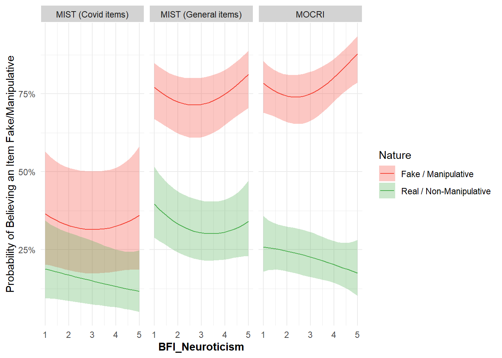
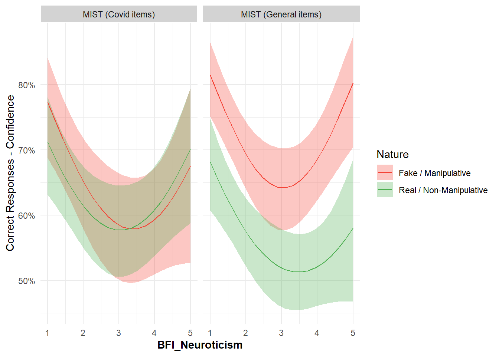
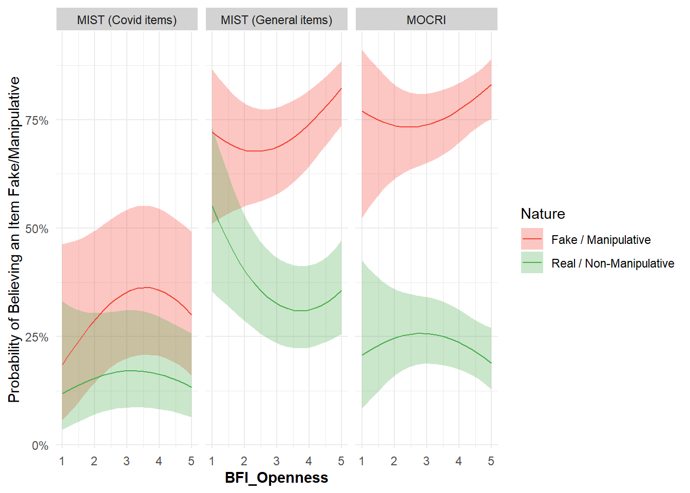
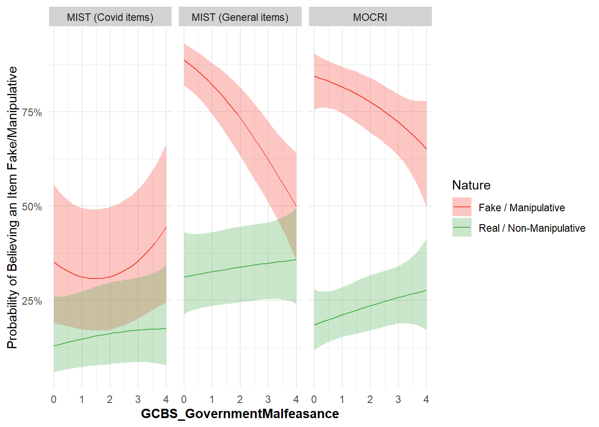

Code
library(tidyverse)
library(easystats)
library(patchwork)
library(ggside)
library(glmmTMB)library(tidyverse)
library(easystats)
library(patchwork)
library(ggside)
library(glmmTMB)df <- read.csv("../data/data_participants.csv") |>
mutate(
# Political_Affiliation = fct_relevel(Political_Affiliation, "Green", "Labour", "Democrat", "None", "None or Independent", "Liberal-Democrats", "Conservative", "Republican"),
Political_Ideology = fct_relevel(Political_Ideology, "Extremely Liberal", "Liberal", "Slightly Liberal", "Moderate", "Don't Know", "Slightly Conservative", "Conservative", "Extremely Conservative"))
dfmist <- read.csv("../data/data_mist.csv") |>
mutate(Condition = ifelse(Condition == "Pretest", "Pre-test", "Post-test"),
Condition = fct_relevel(Condition, "Pre-test", "Post-test"),
Intervention = ifelse(Intervention == "Tetris", "Tetris", "Bad News"),
Intervention = fct_relevel(Intervention, "Bad News", "Tetris"),
Topic = ifelse(Topic == "Covid", "Covid items", "General items"),
Topic = fct_relevel(Topic, "General items", "Covid items"),
Belief = ifelse(Realness > 0.5, 0, 1),
Fakeness = 1 - Realness,
Confidence = abs(datawizard::rescale(Fakeness, to = c(-1, 1), range = c(0, 1)))) |>
full_join(select(df, Participant, Sample, Political_IdeologyNumeric, starts_with("BFI"), starts_with("GCBS"), starts_with("VSA")), by = "Participant") |>
filter(Sample == "USA")
dfmocri <- read.csv("../data/data_mocri.csv") |>
full_join(select(df, Participant, Sample, Intervention, Political_IdeologyNumeric, starts_with("BFI"), starts_with("GCBS"), starts_with("VSA")), by = "Participant") |>
mutate(Condition = fct_relevel(Condition, "Pre-test", "Post-test"),
Intervention = ifelse(Intervention == "Tetris", "Tetris", "Bad News"),
Intervention = fct_relevel(Intervention, "Bad News", "Tetris")) |>
filter(Sample == "USA")dfmist |>
ggplot(aes(x=Realness)) +
geom_histogram(aes(fill=Nature), alpha=0.6, position="identity", bins=30) +
theme_minimal() +
scale_fill_manual(values=c("Fake"="#F44336", "Real"="#4CAF50"))
m1 <- glmmTMB(
Belief ~ Intervention * Condition * Nature * Topic + (Condition * Nature|Participant) + (1|Item ),
data = dfmist,
family = "binomial"
)
means1 <- estimate_means(m1, by=c("Nature", "Condition", "Intervention", "Topic"))
means1$Topic <- paste0("MIST (", means1$Topic, ")")
display_contrasts <- function(m) {
if("Topic" %in% insight::find_predictors(m)$conditional) {
by <- c("Topic", "Nature")
} else {
by <- c("Nature")
}
c1 <- estimate_contrasts(m, contrast="Condition", by=c(by, "Intervention"), p_adjust="holm") |>
select(-SE, -z) |>
insight::format_table() |>
gt::gt() |>
gt::data_color(columns = "Nature", palette = c("#F44336", "#4CAF50")) |>
gt::data_color(columns = "Intervention", palette = c("purple", "yellow"))
c2 <- estimate_contrasts(m, contrast="Intervention", by=c(by, "Condition='Pre-test'"), p_adjust="holm") |>
select(-SE, -z) |>
insight::format_table() |>
gt::gt() |>
gt::data_color(columns = "Nature", palette = c("#F44336", "#4CAF50"))
list(c1=c1, c2=c2)
}
c <- display_contrasts(m1)
c$c1| Level1 | Level2 | Topic | Nature | Intervention | Difference | CI | p |
|---|---|---|---|---|---|---|---|
| Post-test | Pre-test | General items | Fake | Bad News | 0.05 | [ 0.03, 0.08] | 0.001 |
| Post-test | Pre-test | General items | Fake | Tetris | 0.01 | [-0.02, 0.04] | > .999 |
| Post-test | Pre-test | General items | Real | Bad News | 0.02 | [ 0.00, 0.05] | 0.434 |
| Post-test | Pre-test | General items | Real | Tetris | 0.01 | [-0.02, 0.05] | > .999 |
| Post-test | Pre-test | Covid items | Fake | Bad News | 0.06 | [ 0.02, 0.11] | 0.049 |
| Post-test | Pre-test | Covid items | Fake | Tetris | -9.56e-03 | [-0.06, 0.04] | > .999 |
| Post-test | Pre-test | Covid items | Real | Bad News | -0.01 | [-0.05, 0.02] | > .999 |
| Post-test | Pre-test | Covid items | Real | Tetris | 0.04 | [ 0.00, 0.09] | 0.325 |
c$c2| Level1 | Level2 | Topic | Nature | Condition | Difference | CI | p |
|---|---|---|---|---|---|---|---|
| Tetris | Bad News | General items | Fake | Pre-test | 0.07 | [ 0.03, 0.12] | 0.007 |
| Tetris | Bad News | General items | Real | Pre-test | -0.03 | [-0.07, 0.01] | 0.397 |
| Tetris | Bad News | Covid items | Fake | Pre-test | -4.77e-06 | [-0.06, 0.06] | > .999 |
| Tetris | Bad News | Covid items | Real | Pre-test | -0.05 | [-0.10, 0.00] | 0.103 |
dfsub <- estimate_grouplevel(m1) Cannot extract confidence intervals for random variance parameters from
models with more than one grouping factor.left_join(dfsub, select(df, Level=Participant, Intervention), by = "Level") |>
filter(Intervention == "BadNewsGame") |>
performance::performance_dvour() Group Parameter D_vour
1 Participant (Intercept) 0.8162642
2 Participant ConditionPost-test 0.4391531
3 Participant ConditionPost-test:NatureReal 0.1215949
4 Participant NatureReal 0.7188516# dfsub |>
# filter(Group != "Item", Parameter %in% c("(Intercept)", "ConditionPre-test:NatureReal")) # m <- glmmTMB(
# Fakeness ~ Intervention / Condition / Nature * Topic + (Nature / Condition|Participant) + (1|Item ),
# data = dfmist,
# family = ordbeta()
# )
#
# means <- estimate_means(m, by=c("Nature", "Condition", "Intervention", "Topic"))
# p_mist2 <- means |>
# ggplot(aes(x=Condition, y=Proportion, color=Nature, group=interaction(Nature, Intervention))) +
# geom_line(aes(linetype=Intervention), position=position_dodge2(width=0.2)) +
# geom_pointrange(aes(ymin=CI_low, ymax=CI_high), position=position_dodge2(width=0.2)) +
# facet_wrap(~Topic) +
# scale_color_manual(values=c("Fake"="#F44336", "Real"="#4CAF50")) +
# scale_y_continuous(labels=scales::percent) +
# theme_minimal() +
# labs(y="Belief\nReal vs. Fake", title = "MIST") +
# theme(axis.title.x=element_blank(),
# strip.background = element_rect(fill="lightgrey", color="white"))
# p_mist2
#
# # p_mist1 / p_mist2
#
# estimate_contrasts(m, contrast="Condition", by=c("Topic", "Nature", "Intervention"), p_adjust="holm")
# estimate_contrasts(m, contrast="Intervention", by=c("Topic", "Nature", "Condition='Pre-test'"), p_adjust="holm")dfmist |>
ggplot(aes(x=Confidence)) +
geom_histogram(aes(fill=Nature), alpha=0.6, position="identity", bins=30) +
theme_minimal() +
scale_fill_manual(values=c("Fake"="#F44336", "Real"="#4CAF50"))m2 <- glmmTMB(
Confidence ~ Intervention * Condition * Nature * Topic + (Nature * Condition|Participant) + (1|Item ),
data = filter(dfmist, Correct == 1),
family = ordbeta()
)
means2 <- estimate_means(m2, by=c("Nature", "Condition", "Intervention", "Topic"))
means2$Topic <- paste0("MIST (", means2$Topic, ")")
p_mist2 <- means2 |>
ggplot(aes(x=Condition, y=Proportion, color=Nature, group=interaction(Nature, Intervention))) +
geom_line(aes(linetype=Intervention), position=position_dodge2(width=0.2)) +
geom_pointrange(aes(ymin=CI_low, ymax=CI_high), position=position_dodge2(width=0.2)) +
facet_wrap(~Topic) +
scale_color_manual(values=c("Fake"="#F44336", "Real"="#4CAF50")) +
scale_y_continuous(labels=scales::percent) +
theme_minimal() +
labs(y="Correct Responses - Confidence", color="Items") +
theme(axis.title.x=element_blank(),
strip.background = element_rect(fill="lightgrey", color="white"))
p_mist2#
# # p_mist1 / p_mist2
c <- display_contrasts(m2)
c$c1| Level1 | Level2 | Topic | Nature | Intervention | Difference | CI | p |
|---|---|---|---|---|---|---|---|
| Post-test | Pre-test | General items | Fake | Bad News | 0.03 | [ 0.01, 0.06] | 0.111 |
| Post-test | Pre-test | General items | Fake | Tetris | 0.02 | [-0.01, 0.05] | > .999 |
| Post-test | Pre-test | General items | Real | Bad News | 6.69e-03 | [-0.02, 0.03] | > .999 |
| Post-test | Pre-test | General items | Real | Tetris | -0.03 | [-0.05, 0.00] | 0.296 |
| Post-test | Pre-test | Covid items | Fake | Bad News | 0.05 | [ 0.01, 0.09] | 0.085 |
| Post-test | Pre-test | Covid items | Fake | Tetris | 0.02 | [-0.02, 0.07] | > .999 |
| Post-test | Pre-test | Covid items | Real | Bad News | 1.15e-03 | [-0.03, 0.03] | > .999 |
| Post-test | Pre-test | Covid items | Real | Tetris | -8.72e-03 | [-0.04, 0.02] | > .999 |
c$c2| Level1 | Level2 | Topic | Nature | Condition | Difference | CI | p |
|---|---|---|---|---|---|---|---|
| Tetris | Bad News | General items | Fake | Pre-test | -7.97e-03 | [-0.08, 0.06] | > .999 |
| Tetris | Bad News | General items | Real | Pre-test | -0.02 | [-0.09, 0.04] | > .999 |
| Tetris | Bad News | Covid items | Fake | Pre-test | -0.03 | [-0.11, 0.05] | > .999 |
| Tetris | Bad News | Covid items | Real | Pre-test | -0.02 | [-0.08, 0.05] | > .999 |
m3 <- glmmTMB(
Manipulative ~ Intervention * Nature * Condition + (Nature | Participant) + (1|Item ),
data = dfmocri,
family = "binomial"
)
means3 <- estimate_means(m3, by=c("Nature", "Condition", "Intervention"))
means3$Topic <- "MOCRI"
c <- display_contrasts(m3)
c$c1| Level1 | Level2 | Nature | Intervention | Difference | CI | p |
|---|---|---|---|---|---|---|
| Post-test | Pre-test | Manipulative | Bad News | 0.07 | [-0.01, 0.15] | 0.206 |
| Post-test | Pre-test | Manipulative | Tetris | 0.07 | [ 0.00, 0.14] | 0.179 |
| Post-test | Pre-test | NonManipulative | Bad News | -0.03 | [-0.11, 0.06] | 0.552 |
| Post-test | Pre-test | NonManipulative | Tetris | -0.06 | [-0.15, 0.02] | 0.245 |
c$c2| Level1 | Level2 | Nature | Condition | Difference | CI | p |
|---|---|---|---|---|---|---|
| Tetris | Bad News | Manipulative | Pre-test | 0.07 | [ 0.01, 0.14] | 0.055 |
| Tetris | Bad News | NonManipulative | Pre-test | -6.08e-03 | [-0.06, 0.05] | 0.836 |
p1 <- rbind(means1, means3) |>
ggplot(aes(x=Condition, y=Probability, color=Nature, group=interaction(Nature, Intervention))) +
geom_hline(yintercept=0.5, color="lightgrey") +
geom_line(aes(linetype=Intervention), position=position_dodge2(width=0.2), linewidth = 1) +
geom_pointrange(aes(ymin=CI_low, ymax=CI_high), position=position_dodge2(width=0.2), size = 1) +
scale_color_manual(values=c("Fake"="#F44336", "Real"="#4CAF50", "Manipulative"="#F44336", "NonManipulative"="#4CAF50"),
breaks = c("Fake", "Real"),
labels = c("Fake / Manipulative", "Real / Non-Manipulative")) +
scale_y_continuous(labels=scales::percent) +
theme_minimal() +
labs(y="Probability of Believing an Item Fake/Manipulative", color="Items") +
facet_wrap(~Topic) +
theme(strip.background = element_rect(fill="lightgrey", color="white"),
axis.title.x=element_blank()) +
geom_text(data = rbind(
data.frame(x = 1.48, y = 0.42, Nature="Fake", Intervention="Bad News", Topic = "MIST (Covid items)", label = c("*")),
data.frame(x = 1.48, y = 0.7, Nature="Fake", Intervention="Bad News", Topic = "MIST (General items)", label = c("**")),
data.frame(x = 0.98, y = 0.69, Nature="Fake", Intervention="Bad News", Topic = "MIST (General items)", label = c("**")),
data.frame(x = 0.98, y = 0.75, Nature="Fake", Intervention="Bad News", Topic = "MOCRI", label = c(""))
),
aes(x = x, y = y, label = label)
)
p1
make_covariatemodel <- function(covariate="Political_IdeologyNumeric") {
# MIST ---------------------------------------------------------------------
f <- paste0("Belief ~ Nature / poly(",
covariate,
", 2) * Topic + (Nature|Participant) + (1|Item)")
m <- glmmTMB(
as.formula(f),
data = dfmist[!is.na(dfmist[[covariate]]) & dfmist$Condition == "Pre-test",],
family = "binomial"
)
# m <- glmmTMB(
# Fakeness ~ Nature / poly(Political_IdeologyNumeric, 2) * Topic + (Nature|Participant) + (1|Item ),
# data = filter(dfmist, Condition == "Pre-test", !is.na(Political_IdeologyNumeric)),
# family = ordbeta()
# )
# parameters::parameters(m)
pred <- estimate_relation(m, by=c("Nature", covariate, "Topic"), length = 20)
pred$x <- pred[[covariate]]
pred$Topic <- paste0("MIST (", pred$Topic, ")")
# Benchmark
trends1 <- estimate_slopes(m, trend=covariate, by=c(covariate, "Nature", "Topic"), length=5, backend = "emmeans")
# Confidence ----------------------------------------------------------------
f <- paste0("Confidence ~ Nature / poly(",
covariate,
", 2) * Topic + (Nature|Participant) + (1|Item)")
m <- glmmTMB(
as.formula(f),
data = dfmist[!is.na(dfmist[[covariate]]) & dfmist$Condition == "Pre-test" & dfmist$Correct == 1,],
family = ordbeta()
)
pred2 <- estimate_relation(m, by=c("Nature", covariate, "Topic"), length = 20)
pred2$x <- pred2[[covariate]]
pred2$Topic <- paste0("MIST (", pred2$Topic, ")")
p_conf <- pred2 |>
ggplot(aes(x=x, y=Predicted)) +
geom_ribbon(aes(ymin=CI_low, ymax=CI_high, fill=Nature), alpha=0.3) +
geom_line(aes(color=Nature)) +
scale_color_manual(values=c("Fake"="#F44336", "Real"="#4CAF50", "Manipulative"="#F44336", "NonManipulative"="#4CAF50"),
breaks = c("Fake", "Real"),
labels = c("Fake / Manipulative", "Real / Non-Manipulative")) +
scale_fill_manual(values=c("Fake"="#F44336", "Real"="#4CAF50", "Manipulative"="#F44336", "NonManipulative"="#4CAF50"),
breaks = c("Fake", "Real"),
labels = c("Fake / Manipulative", "Real / Non-Manipulative")) +
scale_y_continuous(labels=scales::percent) +
theme_minimal() +
facet_wrap(~Topic) +
labs(x = covariate, y="Correct Responses - Confidence") +
theme(strip.background = element_rect(fill="lightgrey", color="white"),
axis.title.x = element_text(face="bold"))
trends_conf <- estimate_slopes(m, trend=covariate, by=c(covariate, "Nature", "Topic"), length=5, backend="emmeans") |>
select(-SE, -z, -df_error) |>
insight::format_table() |>
gt::gt() |>
gt::data_color(columns = "Nature", palette = c("#F44336", "#4CAF50")) |>
gt::data_color(columns = covariate, palette = c("lightblue", "blue")) |>
gt::data_color(columns = "p", fn = function(x) ifelse(x < .01, "orange", ifelse(x < .05, "gold", "white")))
# MOCRI --------------------------------------------------------------------
f <- paste0("Manipulative ~ Nature / poly(",
covariate,
", 2) + (Nature|Participant) + (1|Item)")
m <- glmmTMB(
as.formula(f),
data = dfmocri[!is.na(dfmocri[[covariate]]) & dfmocri$Condition == "Pre-test",],
family = "binomial"
)
pred3 <- estimate_relation(m, by=c("Nature", covariate), length = 20)
pred3$x <- pred3[[covariate]]
pred3$Topic <- "MOCRI"
p <- rbind(pred, pred3) |>
ggplot(aes(x=x, y=Predicted)) +
geom_ribbon(aes(ymin=CI_low, ymax=CI_high, fill=Nature), alpha=0.3) +
geom_line(aes(color=Nature)) +
scale_color_manual(values=c("Fake"="#F44336", "Real"="#4CAF50", "Manipulative"="#F44336", "NonManipulative"="#4CAF50"),
breaks = c("Fake", "Real"),
labels = c("Fake / Manipulative", "Real / Non-Manipulative")) +
scale_fill_manual(values=c("Fake"="#F44336", "Real"="#4CAF50", "Manipulative"="#F44336", "NonManipulative"="#4CAF50"),
breaks = c("Fake", "Real"),
labels = c("Fake / Manipulative", "Real / Non-Manipulative")) +
scale_y_continuous(labels=scales::percent) +
theme_minimal() +
facet_wrap(~Topic) +
labs(x = covariate, y = "Probability of Believing an Item Fake/Manipulative") +
theme(strip.background = element_rect(fill="lightgrey", color="white"),
axis.title.x = element_text(face="bold"))
trends2 <- estimate_slopes(m, trend=covariate, by=c(covariate, "Nature"), length=5, backend="emmeans")
trends2$Topic <- "MOCRI"
trends <- rbind(trends1, trends2) |>
select(-SE, -z, -df_error) |>
insight::format_table() |>
gt::gt() |>
gt::data_color(columns = "Nature", palette = c("#F44336", "#4CAF50")) |>
gt::data_color(columns = covariate, palette = c("lightblue", "blue")) |>
gt::data_color(columns = "p", fn = function(x) ifelse(x < .01, "orange", ifelse(x < .05, "gold", "white")))
list(p=p, trends=trends, p_conf = p_conf, trends_conf=trends_conf)
}
rez_ideology <- make_covariatemodel(covariate="Political_IdeologyNumeric")
rez_ideology$p
rez_ideology$trends| Political_IdeologyNumeric | Nature | Topic | Slope | 95% CI | p |
|---|---|---|---|---|---|
| 1.00 | Fake | General items | -0.13 | [-0.40, 0.13] | 0.325 |
| 2.50 | Fake | General items | -0.19 | [-0.33, -0.05] | 0.008 |
| 4.00 | Fake | General items | -0.25 | [-0.33, -0.17] | < .001 |
| 5.50 | Fake | General items | -0.31 | [-0.47, -0.14] | < .001 |
| 7.00 | Fake | General items | -0.37 | [-0.66, -0.08] | 0.013 |
| 1.00 | Real | General items | -3.14e-03 | [-0.23, 0.22] | 0.978 |
| 2.50 | Real | General items | 0.04 | [-0.08, 0.16] | 0.544 |
| 4.00 | Real | General items | 0.08 | [ 0.01, 0.15] | 0.024 |
| 5.50 | Real | General items | 0.12 | [-0.03, 0.26] | 0.110 |
| 7.00 | Real | General items | 0.16 | [-0.09, 0.41] | 0.218 |
| 1.00 | Fake | Covid items | -0.12 | [-0.45, 0.20] | 0.455 |
| 2.50 | Fake | Covid items | -0.07 | [-0.24, 0.10] | 0.425 |
| 4.00 | Fake | Covid items | -0.02 | [-0.12, 0.08] | 0.732 |
| 5.50 | Fake | Covid items | 0.04 | [-0.17, 0.25] | 0.736 |
| 7.00 | Fake | Covid items | 0.09 | [-0.28, 0.46] | 0.632 |
| 1.00 | Real | Covid items | -0.12 | [-0.46, 0.22] | 0.499 |
| 2.50 | Real | Covid items | 0.07 | [-0.11, 0.25] | 0.459 |
| 4.00 | Real | Covid items | 0.26 | [ 0.16, 0.35] | < .001 |
| 5.50 | Real | Covid items | 0.44 | [ 0.24, 0.65] | < .001 |
| 7.00 | Real | Covid items | 0.63 | [ 0.27, 0.99] | < .001 |
| 1.00 | NonManipulative | MOCRI | -0.31 | [-0.63, 0.01] | 0.060 |
| 2.50 | NonManipulative | MOCRI | -0.14 | [-0.31, 0.03] | 0.118 |
| 4.00 | NonManipulative | MOCRI | 0.04 | [-0.06, 0.13] | 0.455 |
| 5.50 | NonManipulative | MOCRI | 0.21 | [ 0.00, 0.42] | 0.047 |
| 7.00 | NonManipulative | MOCRI | 0.38 | [ 0.02, 0.75] | 0.038 |
| 1.00 | Manipulative | MOCRI | 0.22 | [-0.12, 0.57] | 0.203 |
| 2.50 | Manipulative | MOCRI | 0.03 | [-0.16, 0.21] | 0.781 |
| 4.00 | Manipulative | MOCRI | -0.17 | [-0.27, -0.07] | < .001 |
| 5.50 | Manipulative | MOCRI | -0.37 | [-0.59, -0.15] | < .001 |
| 7.00 | Manipulative | MOCRI | -0.57 | [-0.95, -0.18] | 0.004 |
rez_ideology$p_confrez_ideology$trends_conf| Political_IdeologyNumeric | Nature | Topic | Slope | 95% CI | p |
|---|---|---|---|---|---|
| 1.00 | Real | General items | -0.31 | [-0.60, -0.02] | 0.036 |
| 2.50 | Real | General items | -0.12 | [-0.27, 0.03] | 0.124 |
| 4.00 | Real | General items | 0.07 | [-0.02, 0.16] | 0.119 |
| 5.50 | Real | General items | 0.26 | [ 0.07, 0.45] | 0.007 |
| 7.00 | Real | General items | 0.45 | [ 0.12, 0.77] | 0.008 |
| 1.00 | Fake | General items | -0.34 | [-0.68, 0.00] | 0.051 |
| 2.50 | Fake | General items | -0.18 | [-0.36, 0.00] | 0.047 |
| 4.00 | Fake | General items | -0.03 | [-0.13, 0.07] | 0.588 |
| 5.50 | Fake | General items | 0.13 | [-0.10, 0.35] | 0.262 |
| 7.00 | Fake | General items | 0.28 | [-0.10, 0.67] | 0.152 |
| 1.00 | Real | Covid items | -0.42 | [-0.72, -0.11] | 0.007 |
| 2.50 | Real | Covid items | -0.20 | [-0.36, -0.04] | 0.016 |
| 4.00 | Real | Covid items | 0.02 | [-0.07, 0.11] | 0.637 |
| 5.50 | Real | Covid items | 0.24 | [ 0.04, 0.44] | 0.018 |
| 7.00 | Real | Covid items | 0.46 | [ 0.11, 0.81] | 0.009 |
| 1.00 | Fake | Covid items | -0.35 | [-0.73, 0.03] | 0.070 |
| 2.50 | Fake | Covid items | -0.15 | [-0.36, 0.05] | 0.135 |
| 4.00 | Fake | Covid items | 0.04 | [-0.07, 0.16] | 0.473 |
| 5.50 | Fake | Covid items | 0.24 | [-0.01, 0.48] | 0.058 |
| 7.00 | Fake | Covid items | 0.43 | [ 0.01, 0.86] | 0.047 |
rez_vsa <- make_covariatemodel(covariate="VSA_General")
rez_vsa$p
rez_vsa$trends| VSA_General | Nature | Topic | Slope | 95% CI | p |
|---|---|---|---|---|---|
| 0.00 | Fake | General items | -0.27 | [-0.52, -0.02] | 0.034 |
| 2.00 | Fake | General items | -0.28 | [-0.40, -0.15] | < .001 |
| 4.00 | Fake | General items | -0.28 | [-0.36, -0.21] | < .001 |
| 6.00 | Fake | General items | -0.29 | [-0.46, -0.12] | 0.001 |
| 8.00 | Fake | General items | -0.30 | [-0.60, 0.01] | 0.054 |
| 0.00 | Real | General items | 0.16 | [-0.06, 0.38] | 0.154 |
| 2.00 | Real | General items | 0.10 | [-0.01, 0.21] | 0.073 |
| 4.00 | Real | General items | 0.04 | [-0.02, 0.11] | 0.218 |
| 6.00 | Real | General items | -0.02 | [-0.18, 0.14] | 0.833 |
| 8.00 | Real | General items | -0.08 | [-0.35, 0.20] | 0.584 |
| 0.00 | Fake | Covid items | 0.09 | [-0.23, 0.41] | 0.588 |
| 2.00 | Fake | Covid items | 0.03 | [-0.13, 0.19] | 0.724 |
| 4.00 | Fake | Covid items | -0.03 | [-0.13, 0.07] | 0.538 |
| 6.00 | Fake | Covid items | -0.09 | [-0.32, 0.14] | 0.445 |
| 8.00 | Fake | Covid items | -0.15 | [-0.54, 0.25] | 0.461 |
| 0.00 | Real | Covid items | 0.52 | [ 0.17, 0.88] | 0.004 |
| 2.00 | Real | Covid items | 0.41 | [ 0.22, 0.60] | < .001 |
| 4.00 | Real | Covid items | 0.30 | [ 0.20, 0.39] | < .001 |
| 6.00 | Real | Covid items | 0.18 | [-0.04, 0.41] | 0.110 |
| 8.00 | Real | Covid items | 0.07 | [-0.33, 0.47] | 0.731 |
| 0.00 | NonManipulative | MOCRI | 0.02 | [-0.29, 0.34] | 0.897 |
| 2.00 | NonManipulative | MOCRI | 0.07 | [-0.09, 0.23] | 0.369 |
| 4.00 | NonManipulative | MOCRI | 0.12 | [ 0.03, 0.22] | 0.009 |
| 6.00 | NonManipulative | MOCRI | 0.18 | [-0.05, 0.40] | 0.121 |
| 8.00 | NonManipulative | MOCRI | 0.23 | [-0.16, 0.61] | 0.244 |
| 0.00 | Manipulative | MOCRI | 0.17 | [-0.17, 0.50] | 0.322 |
| 2.00 | Manipulative | MOCRI | 0.01 | [-0.15, 0.18] | 0.863 |
| 4.00 | Manipulative | MOCRI | -0.14 | [-0.24, -0.04] | 0.008 |
| 6.00 | Manipulative | MOCRI | -0.29 | [-0.53, -0.05] | 0.017 |
| 8.00 | Manipulative | MOCRI | -0.45 | [-0.86, -0.03] | 0.034 |
rez_vsa$p_conf
rez_vsa$trends_conf| VSA_General | Nature | Topic | Slope | 95% CI | p |
|---|---|---|---|---|---|
| 0.00 | Real | General items | -0.39 | [-0.67, -0.11] | 0.006 |
| 2.00 | Real | General items | -0.16 | [-0.30, -0.02] | 0.021 |
| 4.00 | Real | General items | 0.06 | [-0.02, 0.15] | 0.150 |
| 6.00 | Real | General items | 0.29 | [ 0.09, 0.49] | 0.005 |
| 8.00 | Real | General items | 0.52 | [ 0.17, 0.86] | 0.004 |
| 0.00 | Fake | General items | -0.60 | [-0.93, -0.27] | < .001 |
| 2.00 | Fake | General items | -0.32 | [-0.49, -0.16] | < .001 |
| 4.00 | Fake | General items | -0.04 | [-0.14, 0.06] | 0.402 |
| 6.00 | Fake | General items | 0.24 | [ 0.00, 0.47] | 0.051 |
| 8.00 | Fake | General items | 0.51 | [ 0.11, 0.92] | 0.013 |
| 0.00 | Real | Covid items | -0.59 | [-0.88, -0.29] | < .001 |
| 2.00 | Real | Covid items | -0.28 | [-0.43, -0.14] | < .001 |
| 4.00 | Real | Covid items | 0.02 | [-0.07, 0.11] | 0.636 |
| 6.00 | Real | Covid items | 0.33 | [ 0.11, 0.54] | 0.003 |
| 8.00 | Real | Covid items | 0.63 | [ 0.27, 1.00] | < .001 |
| 0.00 | Fake | Covid items | -0.41 | [-0.79, -0.03] | 0.033 |
| 2.00 | Fake | Covid items | -0.18 | [-0.37, 0.01] | 0.058 |
| 4.00 | Fake | Covid items | 0.05 | [-0.07, 0.16] | 0.420 |
| 6.00 | Fake | Covid items | 0.28 | [ 0.00, 0.56] | 0.051 |
| 8.00 | Fake | Covid items | 0.51 | [ 0.03, 0.99] | 0.037 |
rez_neuro <- make_covariatemodel(covariate="BFI_Neuroticism")
rez_neuro$p
rez_neuro$trends| BFI_Neuroticism | Nature | Topic | Slope | 95% CI | p |
|---|---|---|---|---|---|
| 1.00 | Fake | General items | -0.35 | [-0.72, 0.01] | 0.058 |
| 2.00 | Fake | General items | -0.14 | [-0.34, 0.05] | 0.141 |
| 3.00 | Fake | General items | 0.06 | [-0.05, 0.18] | 0.278 |
| 4.00 | Fake | General items | 0.27 | [ 0.02, 0.52] | 0.033 |
| 5.00 | Fake | General items | 0.48 | [ 0.05, 0.91] | 0.028 |
| 1.00 | Real | General items | -0.35 | [-0.66, -0.04] | 0.027 |
| 2.00 | Real | General items | -0.20 | [-0.37, -0.04] | 0.014 |
| 3.00 | Real | General items | -0.06 | [-0.16, 0.04] | 0.231 |
| 4.00 | Real | General items | 0.08 | [-0.13, 0.30] | 0.431 |
| 5.00 | Real | General items | 0.23 | [-0.13, 0.59] | 0.216 |
| 1.00 | Fake | Covid items | -0.22 | [-0.68, 0.24] | 0.350 |
| 2.00 | Fake | Covid items | -0.11 | [-0.35, 0.13] | 0.364 |
| 3.00 | Fake | Covid items | -4.74e-03 | [-0.15, 0.14] | 0.948 |
| 4.00 | Fake | Covid items | 0.10 | [-0.21, 0.41] | 0.521 |
| 5.00 | Fake | Covid items | 0.21 | [-0.33, 0.75] | 0.445 |
| 1.00 | Real | Covid items | -0.13 | [-0.58, 0.31] | 0.555 |
| 2.00 | Real | Covid items | -0.14 | [-0.37, 0.09] | 0.243 |
| 3.00 | Real | Covid items | -0.14 | [-0.29, 0.00] | 0.057 |
| 4.00 | Real | Covid items | -0.15 | [-0.47, 0.17] | 0.365 |
| 5.00 | Real | Covid items | -0.15 | [-0.69, 0.39] | 0.583 |
| 1.00 | NonManipulative | MOCRI | -0.05 | [-0.49, 0.39] | 0.825 |
| 2.00 | NonManipulative | MOCRI | -0.09 | [-0.32, 0.14] | 0.459 |
| 3.00 | NonManipulative | MOCRI | -0.13 | [-0.27, 0.02] | 0.084 |
| 4.00 | NonManipulative | MOCRI | -0.16 | [-0.47, 0.14] | 0.297 |
| 5.00 | NonManipulative | MOCRI | -0.20 | [-0.73, 0.32] | 0.453 |
| 1.00 | Manipulative | MOCRI | -0.36 | [-0.84, 0.12] | 0.140 |
| 2.00 | Manipulative | MOCRI | -0.09 | [-0.35, 0.16] | 0.463 |
| 3.00 | Manipulative | MOCRI | 0.17 | [ 0.01, 0.33] | 0.032 |
| 4.00 | Manipulative | MOCRI | 0.44 | [ 0.10, 0.78] | 0.011 |
| 5.00 | Manipulative | MOCRI | 0.70 | [ 0.13, 1.28] | 0.017 |
rez_neuro$p_conf
rez_neuro$trends_conf| BFI_Neuroticism | Nature | Topic | Slope | 95% CI | p |
|---|---|---|---|---|---|
| 1.00 | Real | General items | -0.57 | [-0.96, -0.18] | 0.004 |
| 2.00 | Real | General items | -0.34 | [-0.55, -0.14] | 0.001 |
| 3.00 | Real | General items | -0.11 | [-0.23, 0.01] | 0.083 |
| 4.00 | Real | General items | 0.12 | [-0.14, 0.39] | 0.353 |
| 5.00 | Real | General items | 0.36 | [-0.09, 0.81] | 0.121 |
| 1.00 | Fake | General items | -0.88 | [-1.33, -0.42] | < .001 |
| 2.00 | Fake | General items | -0.45 | [-0.69, -0.21] | < .001 |
| 3.00 | Fake | General items | -0.02 | [-0.16, 0.13] | 0.805 |
| 4.00 | Fake | General items | 0.41 | [ 0.10, 0.72] | 0.009 |
| 5.00 | Fake | General items | 0.84 | [ 0.31, 1.37] | 0.002 |
| 1.00 | Real | Covid items | -0.58 | [-0.99, -0.17] | 0.005 |
| 2.00 | Real | Covid items | -0.30 | [-0.51, -0.08] | 0.007 |
| 3.00 | Real | Covid items | -0.01 | [-0.14, 0.12] | 0.857 |
| 4.00 | Real | Covid items | 0.27 | [ 0.00, 0.55] | 0.053 |
| 5.00 | Real | Covid items | 0.56 | [ 0.08, 1.03] | 0.022 |
| 1.00 | Fake | Covid items | -0.76 | [-1.27, -0.25] | 0.004 |
| 2.00 | Fake | Covid items | -0.44 | [-0.71, -0.17] | 0.001 |
| 3.00 | Fake | Covid items | -0.12 | [-0.29, 0.04] | 0.138 |
| 4.00 | Fake | Covid items | 0.20 | [-0.16, 0.55] | 0.277 |
| 5.00 | Fake | Covid items | 0.51 | [-0.09, 1.12] | 0.096 |
rez_consc <- make_covariatemodel(covariate="BFI_Conscientiousness")
rez_consc$p
rez_consc$trends| BFI_Conscientiousness | Nature | Topic | Slope | 95% CI | p |
|---|---|---|---|---|---|
| 1.00 | Fake | General items | 0.67 | [-0.04, 1.37] | 0.063 |
| 2.00 | Fake | General items | 0.40 | [-0.05, 0.86] | 0.081 |
| 3.00 | Fake | General items | 0.14 | [-0.09, 0.36] | 0.223 |
| 4.00 | Fake | General items | -0.12 | [-0.30, 0.05] | 0.162 |
| 5.00 | Fake | General items | -0.39 | [-0.77, -0.01] | 0.046 |
| 1.00 | Real | General items | -0.10 | [-0.71, 0.50] | 0.744 |
| 2.00 | Real | General items | -0.02 | [-0.41, 0.37] | 0.936 |
| 3.00 | Real | General items | 0.07 | [-0.13, 0.26] | 0.488 |
| 4.00 | Real | General items | 0.15 | [ 0.00, 0.30] | 0.043 |
| 5.00 | Real | General items | 0.24 | [-0.09, 0.56] | 0.152 |
| 1.00 | Fake | Covid items | -0.11 | [-1.01, 0.78] | 0.807 |
| 2.00 | Fake | Covid items | -0.11 | [-0.68, 0.47] | 0.716 |
| 3.00 | Fake | Covid items | -0.10 | [-0.39, 0.18] | 0.480 |
| 4.00 | Fake | Covid items | -0.10 | [-0.32, 0.12] | 0.383 |
| 5.00 | Fake | Covid items | -0.09 | [-0.58, 0.39] | 0.706 |
| 1.00 | Real | Covid items | -0.57 | [-1.44, 0.30] | 0.203 |
| 2.00 | Real | Covid items | -0.27 | [-0.83, 0.30] | 0.354 |
| 3.00 | Real | Covid items | 0.03 | [-0.25, 0.31] | 0.809 |
| 4.00 | Real | Covid items | 0.33 | [ 0.12, 0.55] | 0.002 |
| 5.00 | Real | Covid items | 0.64 | [ 0.16, 1.11] | 0.008 |
| 1.00 | NonManipulative | MOCRI | -0.54 | [-1.39, 0.31] | 0.214 |
| 2.00 | NonManipulative | MOCRI | -0.30 | [-0.84, 0.25] | 0.288 |
| 3.00 | NonManipulative | MOCRI | -0.05 | [-0.33, 0.22] | 0.694 |
| 4.00 | NonManipulative | MOCRI | 0.19 | [-0.03, 0.40] | 0.084 |
| 5.00 | NonManipulative | MOCRI | 0.43 | [-0.03, 0.89] | 0.069 |
| 1.00 | Manipulative | MOCRI | 0.49 | [-0.42, 1.41] | 0.290 |
| 2.00 | Manipulative | MOCRI | 0.31 | [-0.28, 0.90] | 0.306 |
| 3.00 | Manipulative | MOCRI | 0.12 | [-0.17, 0.41] | 0.418 |
| 4.00 | Manipulative | MOCRI | -0.07 | [-0.30, 0.16] | 0.570 |
| 5.00 | Manipulative | MOCRI | -0.25 | [-0.76, 0.25] | 0.321 |
rez_consc$p_conf
rez_consc$trends_conf| BFI_Conscientiousness | Nature | Topic | Slope | 95% CI | p |
|---|---|---|---|---|---|
| 1.00 | Real | General items | -0.40 | [-1.16, 0.36] | 0.300 |
| 2.00 | Real | General items | -0.21 | [-0.69, 0.28] | 0.405 |
| 3.00 | Real | General items | -0.01 | [-0.25, 0.23] | 0.912 |
| 4.00 | Real | General items | 0.18 | [-0.01, 0.37] | 0.059 |
| 5.00 | Real | General items | 0.37 | [-0.04, 0.78] | 0.073 |
| 1.00 | Fake | General items | -0.38 | [-1.28, 0.52] | 0.405 |
| 2.00 | Fake | General items | -0.19 | [-0.76, 0.39] | 0.527 |
| 3.00 | Fake | General items | 7.85e-03 | [-0.28, 0.29] | 0.957 |
| 4.00 | Fake | General items | 0.20 | [-0.02, 0.42] | 0.071 |
| 5.00 | Fake | General items | 0.40 | [-0.09, 0.88] | 0.107 |
| 1.00 | Real | Covid items | -0.45 | [-1.24, 0.35] | 0.268 |
| 2.00 | Real | Covid items | -0.26 | [-0.77, 0.25] | 0.321 |
| 3.00 | Real | Covid items | -0.07 | [-0.32, 0.18] | 0.594 |
| 4.00 | Real | Covid items | 0.12 | [-0.07, 0.32] | 0.224 |
| 5.00 | Real | Covid items | 0.31 | [-0.12, 0.74] | 0.155 |
| 1.00 | Fake | Covid items | -0.57 | [-1.60, 0.47] | 0.282 |
| 2.00 | Fake | Covid items | -0.29 | [-0.95, 0.38] | 0.398 |
| 3.00 | Fake | Covid items | -7.26e-03 | [-0.34, 0.32] | 0.965 |
| 4.00 | Fake | Covid items | 0.27 | [ 0.03, 0.52] | 0.030 |
| 5.00 | Fake | Covid items | 0.55 | [ 0.00, 1.10] | 0.049 |
rez_agre <- make_covariatemodel(covariate="BFI_Agreeableness")
rez_agre$p
rez_agre$trends| BFI_Agreeableness | Nature | Topic | Slope | 95% CI | p |
|---|---|---|---|---|---|
| 1.00 | Fake | General items | 0.02 | [-0.53, 0.58] | 0.935 |
| 2.00 | Fake | General items | 1.74e-03 | [-0.33, 0.33] | 0.992 |
| 3.00 | Fake | General items | -0.02 | [-0.17, 0.13] | 0.798 |
| 4.00 | Fake | General items | -0.04 | [-0.25, 0.17] | 0.704 |
| 5.00 | Fake | General items | -0.06 | [-0.48, 0.36] | 0.772 |
| 1.00 | Real | General items | -0.34 | [-0.81, 0.12] | 0.149 |
| 2.00 | Real | General items | -0.16 | [-0.44, 0.12] | 0.273 |
| 3.00 | Real | General items | 0.03 | [-0.09, 0.16] | 0.626 |
| 4.00 | Real | General items | 0.22 | [ 0.04, 0.40] | 0.016 |
| 5.00 | Real | General items | 0.41 | [ 0.05, 0.76] | 0.025 |
| 1.00 | Fake | Covid items | -0.16 | [-0.85, 0.53] | 0.656 |
| 2.00 | Fake | Covid items | -0.11 | [-0.52, 0.31] | 0.608 |
| 3.00 | Fake | Covid items | -0.06 | [-0.25, 0.13] | 0.535 |
| 4.00 | Fake | Covid items | -9.64e-03 | [-0.27, 0.26] | 0.943 |
| 5.00 | Fake | Covid items | 0.04 | [-0.49, 0.57] | 0.883 |
| 1.00 | Real | Covid items | -0.73 | [-1.40, -0.06] | 0.033 |
| 2.00 | Real | Covid items | -0.37 | [-0.77, 0.03] | 0.071 |
| 3.00 | Real | Covid items | -0.01 | [-0.19, 0.17] | 0.911 |
| 4.00 | Real | Covid items | 0.35 | [ 0.10, 0.60] | 0.007 |
| 5.00 | Real | Covid items | 0.71 | [ 0.20, 1.22] | 0.006 |
| 1.00 | NonManipulative | MOCRI | -0.50 | [-1.16, 0.16] | 0.138 |
| 2.00 | NonManipulative | MOCRI | -0.28 | [-0.67, 0.11] | 0.163 |
| 3.00 | NonManipulative | MOCRI | -0.06 | [-0.24, 0.12] | 0.497 |
| 4.00 | NonManipulative | MOCRI | 0.16 | [-0.10, 0.41] | 0.224 |
| 5.00 | NonManipulative | MOCRI | 0.38 | [-0.13, 0.88] | 0.142 |
| 1.00 | Manipulative | MOCRI | -0.51 | [-1.26, 0.23] | 0.178 |
| 2.00 | Manipulative | MOCRI | -0.31 | [-0.76, 0.14] | 0.177 |
| 3.00 | Manipulative | MOCRI | -0.10 | [-0.31, 0.10] | 0.316 |
| 4.00 | Manipulative | MOCRI | 0.10 | [-0.18, 0.38] | 0.476 |
| 5.00 | Manipulative | MOCRI | 0.31 | [-0.25, 0.86] | 0.282 |
rez_agre$p_confrez_agre$trends_conf| BFI_Agreeableness | Nature | Topic | Slope | 95% CI | p |
|---|---|---|---|---|---|
| 1.00 | Real | General items | -0.80 | [-1.39, -0.21] | 0.008 |
| 2.00 | Real | General items | -0.41 | [-0.76, -0.06] | 0.023 |
| 3.00 | Real | General items | -0.02 | [-0.17, 0.14] | 0.848 |
| 4.00 | Real | General items | 0.38 | [ 0.15, 0.60] | 0.001 |
| 5.00 | Real | General items | 0.77 | [ 0.32, 1.22] | < .001 |
| 1.00 | Fake | General items | -0.73 | [-1.43, -0.03] | 0.040 |
| 2.00 | Fake | General items | -0.35 | [-0.77, 0.06] | 0.097 |
| 3.00 | Fake | General items | 0.03 | [-0.16, 0.21] | 0.775 |
| 4.00 | Fake | General items | 0.41 | [ 0.14, 0.67] | 0.003 |
| 5.00 | Fake | General items | 0.79 | [ 0.25, 1.32] | 0.004 |
| 1.00 | Real | Covid items | -0.93 | [-1.55, -0.30] | 0.004 |
| 2.00 | Real | Covid items | -0.53 | [-0.90, -0.16] | 0.005 |
| 3.00 | Real | Covid items | -0.13 | [-0.30, 0.03] | 0.118 |
| 4.00 | Real | Covid items | 0.26 | [ 0.03, 0.50] | 0.030 |
| 5.00 | Real | Covid items | 0.66 | [ 0.19, 1.13] | 0.006 |
| 1.00 | Fake | Covid items | -0.31 | [-1.11, 0.48] | 0.438 |
| 2.00 | Fake | Covid items | -0.09 | [-0.57, 0.38] | 0.707 |
| 3.00 | Fake | Covid items | 0.13 | [-0.08, 0.34] | 0.222 |
| 4.00 | Fake | Covid items | 0.36 | [ 0.05, 0.66] | 0.022 |
| 5.00 | Fake | Covid items | 0.58 | [-0.03, 1.19] | 0.061 |
rez_open <- make_covariatemodel(covariate="BFI_Openness")
rez_open$p
rez_open$trends | BFI_Openness | Nature | Topic | Slope | 95% CI | p |
|---|---|---|---|---|---|
| 1.00 | Fake | General items | -0.31 | [-0.94, 0.32] | 0.333 |
| 2.00 | Fake | General items | -0.08 | [-0.48, 0.32] | 0.686 |
| 3.00 | Fake | General items | 0.15 | [-0.05, 0.35] | 0.150 |
| 4.00 | Fake | General items | 0.38 | [ 0.19, 0.56] | < .001 |
| 5.00 | Fake | General items | 0.60 | [ 0.22, 0.99] | 0.002 |
| 1.00 | Real | General items | -0.73 | [-1.27, -0.19] | 0.008 |
| 2.00 | Real | General items | -0.47 | [-0.81, -0.12] | 0.008 |
| 3.00 | Real | General items | -0.20 | [-0.37, -0.03] | 0.023 |
| 4.00 | Real | General items | 0.07 | [-0.09, 0.23] | 0.383 |
| 5.00 | Real | General items | 0.34 | [ 0.01, 0.67] | 0.042 |
| 1.00 | Fake | Covid items | 0.71 | [-0.15, 1.57] | 0.105 |
| 2.00 | Fake | Covid items | 0.44 | [-0.12, 0.99] | 0.121 |
| 3.00 | Fake | Covid items | 0.16 | [-0.11, 0.43] | 0.256 |
| 4.00 | Fake | Covid items | -0.12 | [-0.35, 0.11] | 0.315 |
| 5.00 | Fake | Covid items | -0.40 | [-0.89, 0.10] | 0.116 |
| 1.00 | Real | Covid items | 0.39 | [-0.44, 1.23] | 0.356 |
| 2.00 | Real | Covid items | 0.21 | [-0.32, 0.74] | 0.433 |
| 3.00 | Real | Covid items | 0.03 | [-0.23, 0.30] | 0.807 |
| 4.00 | Real | Covid items | -0.15 | [-0.38, 0.09] | 0.217 |
| 5.00 | Real | Covid items | -0.33 | [-0.82, 0.16] | 0.190 |
| 1.00 | NonManipulative | MOCRI | 0.31 | [-0.47, 1.08] | 0.434 |
| 2.00 | NonManipulative | MOCRI | 0.14 | [-0.35, 0.63] | 0.576 |
| 3.00 | NonManipulative | MOCRI | -0.03 | [-0.27, 0.22] | 0.820 |
| 4.00 | NonManipulative | MOCRI | -0.20 | [-0.43, 0.03] | 0.090 |
| 5.00 | NonManipulative | MOCRI | -0.37 | [-0.84, 0.10] | 0.125 |
| 1.00 | Manipulative | MOCRI | -0.27 | [-1.10, 0.57] | 0.530 |
| 2.00 | Manipulative | MOCRI | -0.08 | [-0.61, 0.45] | 0.756 |
| 3.00 | Manipulative | MOCRI | 0.10 | [-0.16, 0.36] | 0.462 |
| 4.00 | Manipulative | MOCRI | 0.28 | [ 0.03, 0.53] | 0.026 |
| 5.00 | Manipulative | MOCRI | 0.47 | [-0.04, 0.97] | 0.072 |
rez_open$p_conf
rez_open$trends_conf| BFI_Openness | Nature | Topic | Slope | 95% CI | p |
|---|---|---|---|---|---|
| 1.00 | Real | General items | 0.05 | [-0.63, 0.74] | 0.877 |
| 2.00 | Real | General items | 0.07 | [-0.37, 0.51] | 0.751 |
| 3.00 | Real | General items | 0.09 | [-0.13, 0.30] | 0.432 |
| 4.00 | Real | General items | 0.10 | [-0.10, 0.30] | 0.309 |
| 5.00 | Real | General items | 0.12 | [-0.29, 0.53] | 0.567 |
| 1.00 | Fake | General items | -0.31 | [-1.12, 0.50] | 0.453 |
| 2.00 | Fake | General items | -0.14 | [-0.66, 0.38] | 0.594 |
| 3.00 | Fake | General items | 0.03 | [-0.23, 0.29] | 0.823 |
| 4.00 | Fake | General items | 0.20 | [-0.04, 0.44] | 0.097 |
| 5.00 | Fake | General items | 0.37 | [-0.12, 0.86] | 0.136 |
| 1.00 | Real | Covid items | -0.42 | [-1.14, 0.30] | 0.250 |
| 2.00 | Real | Covid items | -0.21 | [-0.67, 0.25] | 0.364 |
| 3.00 | Real | Covid items | -1.31e-03 | [-0.23, 0.23] | 0.991 |
| 4.00 | Real | Covid items | 0.21 | [ 0.00, 0.42] | 0.051 |
| 5.00 | Real | Covid items | 0.42 | [-0.01, 0.85] | 0.057 |
| 1.00 | Fake | Covid items | 0.13 | [-0.90, 1.16] | 0.805 |
| 2.00 | Fake | Covid items | 0.09 | [-0.57, 0.75] | 0.785 |
| 3.00 | Fake | Covid items | 0.05 | [-0.27, 0.38] | 0.741 |
| 4.00 | Fake | Covid items | 0.02 | [-0.25, 0.28] | 0.897 |
| 5.00 | Fake | Covid items | -0.02 | [-0.59, 0.55] | 0.947 |
rez_extr <- make_covariatemodel(covariate="BFI_Extraversion")
rez_extr$p
rez_extr$trends| BFI_Extraversion | Nature | Topic | Slope | 95% CI | p |
|---|---|---|---|---|---|
| 1.00 | Fake | General items | -0.22 | [-0.61, 0.17] | 0.273 |
| 2.00 | Fake | General items | -0.15 | [-0.36, 0.06] | 0.152 |
| 3.00 | Fake | General items | -0.08 | [-0.22, 0.05] | 0.214 |
| 4.00 | Fake | General items | -0.02 | [-0.29, 0.26] | 0.908 |
| 5.00 | Fake | General items | 0.05 | [-0.42, 0.52] | 0.832 |
| 1.00 | Real | General items | 0.06 | [-0.27, 0.39] | 0.711 |
| 2.00 | Real | General items | 0.07 | [-0.10, 0.25] | 0.413 |
| 3.00 | Real | General items | 0.08 | [-0.03, 0.20] | 0.142 |
| 4.00 | Real | General items | 0.09 | [-0.14, 0.33] | 0.430 |
| 5.00 | Real | General items | 0.11 | [-0.29, 0.50] | 0.605 |
| 1.00 | Fake | Covid items | 0.05 | [-0.44, 0.54] | 0.844 |
| 2.00 | Fake | Covid items | 0.06 | [-0.20, 0.32] | 0.658 |
| 3.00 | Fake | Covid items | 0.07 | [-0.10, 0.23] | 0.417 |
| 4.00 | Fake | Covid items | 0.08 | [-0.27, 0.43] | 0.659 |
| 5.00 | Fake | Covid items | 0.09 | [-0.50, 0.68] | 0.771 |
| 1.00 | Real | Covid items | 0.29 | [-0.20, 0.78] | 0.245 |
| 2.00 | Real | Covid items | 0.27 | [ 0.00, 0.53] | 0.048 |
| 3.00 | Real | Covid items | 0.24 | [ 0.08, 0.40] | 0.003 |
| 4.00 | Real | Covid items | 0.22 | [-0.11, 0.54] | 0.189 |
| 5.00 | Real | Covid items | 0.19 | [-0.36, 0.75] | 0.495 |
| 1.00 | NonManipulative | MOCRI | 0.24 | [-0.23, 0.72] | 0.313 |
| 2.00 | NonManipulative | MOCRI | 0.17 | [-0.08, 0.42] | 0.186 |
| 3.00 | NonManipulative | MOCRI | 0.10 | [-0.06, 0.26] | 0.244 |
| 4.00 | NonManipulative | MOCRI | 0.02 | [-0.31, 0.36] | 0.903 |
| 5.00 | NonManipulative | MOCRI | -0.05 | [-0.62, 0.51] | 0.853 |
| 1.00 | Manipulative | MOCRI | -0.09 | [-0.61, 0.42] | 0.720 |
| 2.00 | Manipulative | MOCRI | -0.02 | [-0.29, 0.25] | 0.868 |
| 3.00 | Manipulative | MOCRI | 0.05 | [-0.13, 0.23] | 0.592 |
| 4.00 | Manipulative | MOCRI | 0.12 | [-0.25, 0.49] | 0.531 |
| 5.00 | Manipulative | MOCRI | 0.19 | [-0.44, 0.82] | 0.553 |
rez_extr$p_conf
rez_extr$trends_conf | BFI_Extraversion | Nature | Topic | Slope | 95% CI | p |
|---|---|---|---|---|---|
| 1.00 | Real | General items | 0.02 | [-0.40, 0.44] | 0.931 |
| 2.00 | Real | General items | 0.04 | [-0.18, 0.26] | 0.694 |
| 3.00 | Real | General items | 0.07 | [-0.07, 0.21] | 0.335 |
| 4.00 | Real | General items | 0.10 | [-0.20, 0.39] | 0.532 |
| 5.00 | Real | General items | 0.12 | [-0.39, 0.63] | 0.639 |
| 1.00 | Fake | General items | -0.27 | [-0.77, 0.22] | 0.283 |
| 2.00 | Fake | General items | -0.16 | [-0.42, 0.11] | 0.243 |
| 3.00 | Fake | General items | -0.04 | [-0.21, 0.13] | 0.642 |
| 4.00 | Fake | General items | 0.08 | [-0.28, 0.43] | 0.672 |
| 5.00 | Fake | General items | 0.19 | [-0.41, 0.79] | 0.529 |
| 1.00 | Real | Covid items | -0.23 | [-0.67, 0.20] | 0.296 |
| 2.00 | Real | Covid items | -0.07 | [-0.30, 0.16] | 0.544 |
| 3.00 | Real | Covid items | 0.09 | [-0.06, 0.24] | 0.232 |
| 4.00 | Real | Covid items | 0.25 | [-0.06, 0.57] | 0.117 |
| 5.00 | Real | Covid items | 0.42 | [-0.12, 0.95] | 0.128 |
| 1.00 | Fake | Covid items | 0.08 | [-0.48, 0.63] | 0.781 |
| 2.00 | Fake | Covid items | 0.09 | [-0.20, 0.39] | 0.546 |
| 3.00 | Fake | Covid items | 0.10 | [-0.08, 0.29] | 0.277 |
| 4.00 | Fake | Covid items | 0.11 | [-0.27, 0.50] | 0.561 |
| 5.00 | Fake | Covid items | 0.13 | [-0.53, 0.79] | 0.706 |
rez_gcbsg <- make_covariatemodel(covariate="GCBS_General")
rez_gcbsg$p
rez_gcbsg$trends |>
filter(p < .05)Estimated Marginal Effects
GCBS_General | Nature | Topic | Slope | SE | 95% CI
------------------------------------------------------------------------------
0.00 | Fake | General items | -0.57 | 0.23 | [-1.02, -0.12]
1.00 | Fake | General items | -0.70 | 0.12 | [-0.93, -0.47]
2.00 | Fake | General items | -0.83 | 0.07 | [-0.96, -0.70]
3.00 | Fake | General items | -0.96 | 0.16 | [-1.27, -0.65]
4.00 | Fake | General items | -1.09 | 0.27 | [-1.62, -0.56]
2.00 | Real | Covid items | 0.23 | 0.09 | [ 0.05, 0.41]
2.00 | NonManipulative | MOCRI | 0.21 | 0.09 | [ 0.03, 0.39]
1.00 | Manipulative | MOCRI | -0.32 | 0.16 | [-0.64, 0.00]
2.00 | Manipulative | MOCRI | -0.44 | 0.10 | [-0.63, -0.25]
3.00 | Manipulative | MOCRI | -0.56 | 0.22 | [-1.00, -0.12]
GCBS_General | z | df | p
------------------------------------
0.00 | -2.50 | Inf | 0.012
1.00 | -5.97 | Inf | < .001
2.00 | -12.31 | Inf | < .001
3.00 | -6.15 | Inf | < .001
4.00 | -4.03 | Inf | < .001
2.00 | 2.46 | Inf | 0.014
2.00 | 2.32 | Inf | 0.020
1.00 | -1.98 | Inf | 0.047
2.00 | -4.57 | Inf | < .001
3.00 | -2.49 | Inf | 0.013
Marginal effects estimated for GCBS_Generalrez_gcbsg$p_conf
rez_gcbsg$trends_conf |>
filter(p < .05)Estimated Marginal Effects
GCBS_General | Nature | Topic | Slope | SE | 95% CI | z
-----------------------------------------------------------------------------
0.00 | Real | General items | -0.86 | 0.26 | [-1.37, -0.35] | -3.28
1.00 | Real | General items | -0.44 | 0.13 | [-0.70, -0.18] | -3.34
3.00 | Real | General items | 0.39 | 0.19 | [ 0.03, 0.76] | 2.11
4.00 | Real | General items | 0.81 | 0.32 | [ 0.18, 1.44] | 2.53
0.00 | Fake | General items | -1.56 | 0.29 | [-2.13, -0.98] | -5.32
1.00 | Fake | General items | -0.92 | 0.15 | [-1.21, -0.63] | -6.19
2.00 | Fake | General items | -0.27 | 0.09 | [-0.45, -0.10] | -3.06
4.00 | Fake | General items | 1.02 | 0.36 | [ 0.31, 1.72] | 2.81
0.00 | Real | Covid items | -1.17 | 0.28 | [-1.72, -0.63] | -4.24
1.00 | Real | Covid items | -0.66 | 0.14 | [-0.94, -0.39] | -4.74
4.00 | Real | Covid items | 0.86 | 0.34 | [ 0.20, 1.53] | 2.54
0.00 | Fake | Covid items | -1.48 | 0.34 | [-2.14, -0.81] | -4.37
1.00 | Fake | Covid items | -0.80 | 0.17 | [-1.14, -0.46] | -4.65
3.00 | Fake | Covid items | 0.56 | 0.24 | [ 0.09, 1.02] | 2.33
4.00 | Fake | Covid items | 1.23 | 0.41 | [ 0.43, 2.04] | 3.01
GCBS_General | df | p
---------------------------
0.00 | Inf | 0.001
1.00 | Inf | < .001
3.00 | Inf | 0.035
4.00 | Inf | 0.012
0.00 | Inf | < .001
1.00 | Inf | < .001
2.00 | Inf | 0.002
4.00 | Inf | 0.005
0.00 | Inf | < .001
1.00 | Inf | < .001
4.00 | Inf | 0.011
0.00 | Inf | < .001
1.00 | Inf | < .001
3.00 | Inf | 0.020
4.00 | Inf | 0.003
Marginal effects estimated for GCBS_Generalrez_gcbs2 <- make_covariatemodel(covariate="GCBS_GovernmentMalfeasance")
rez_gcbs2$p
rez_gcbs2$trends |>
filter(p < .05)Estimated Marginal Effects
GCBS_GovernmentMalfeasance | Nature | Topic | Slope | SE
------------------------------------------------------------------------
0.00 | Fake | General items | -0.54 | 0.20
1.00 | Fake | General items | -0.53 | 0.11
2.00 | Fake | General items | -0.52 | 0.06
3.00 | Fake | General items | -0.50 | 0.12
4.00 | Fake | General items | -0.49 | 0.22
2.00 | Manipulative | MOCRI | -0.27 | 0.08
GCBS_GovernmentMalfeasance | 95% CI | z | df | p
------------------------------------------------------------------
0.00 | [-0.93, -0.15] | -2.69 | Inf | 0.007
1.00 | [-0.74, -0.32] | -4.90 | Inf | < .001
2.00 | [-0.63, -0.40] | -8.74 | Inf | < .001
3.00 | [-0.75, -0.26] | -4.05 | Inf | < .001
4.00 | [-0.92, -0.07] | -2.26 | Inf | 0.024
2.00 | [-0.42, -0.11] | -3.32 | Inf | < .001
Marginal effects estimated for GCBS_GovernmentMalfeasancerez_gcbs2$p_confrez_gcbs2$trends_conf |>
filter(p < .05)Estimated Marginal Effects
GCBS_GovernmentMalfeasance | Nature | Topic | Slope | SE
------------------------------------------------------------------
0.00 | Real | General items | -0.61 | 0.21
1.00 | Real | General items | -0.34 | 0.11
0.00 | Fake | General items | -1.07 | 0.25
1.00 | Fake | General items | -0.65 | 0.13
2.00 | Fake | General items | -0.23 | 0.07
4.00 | Fake | General items | 0.61 | 0.28
0.00 | Real | Covid items | -0.97 | 0.23
1.00 | Real | Covid items | -0.55 | 0.12
2.00 | Real | Covid items | -0.14 | 0.07
4.00 | Real | Covid items | 0.69 | 0.26
0.00 | Fake | Covid items | -1.11 | 0.28
1.00 | Fake | Covid items | -0.63 | 0.15
4.00 | Fake | Covid items | 0.83 | 0.32
GCBS_GovernmentMalfeasance | 95% CI | z | df | p
------------------------------------------------------------------
0.00 | [-1.03, -0.19] | -2.85 | Inf | 0.004
1.00 | [-0.56, -0.12] | -2.99 | Inf | 0.003
0.00 | [-1.55, -0.59] | -4.35 | Inf | < .001
1.00 | [-0.90, -0.39] | -4.97 | Inf | < .001
2.00 | [-0.37, -0.08] | -3.07 | Inf | 0.002
4.00 | [ 0.07, 1.16] | 2.20 | Inf | 0.028
0.00 | [-1.41, -0.52] | -4.25 | Inf | < .001
1.00 | [-0.79, -0.31] | -4.56 | Inf | < .001
2.00 | [-0.27, 0.00] | -1.99 | Inf | 0.047
4.00 | [ 0.19, 1.20] | 2.70 | Inf | 0.007
0.00 | [-1.66, -0.56] | -3.96 | Inf | < .001
1.00 | [-0.92, -0.33] | -4.19 | Inf | < .001
4.00 | [ 0.21, 1.44] | 2.62 | Inf | 0.009
Marginal effects estimated for GCBS_GovernmentMalfeasance((p1 + labs(title = "A. Effect Intervention")) /
(rez_vsa$p + labs(x = "Authoritarianism", title = "B. Effect of Individual Characteristics")) /
(rez_gcbsg$p + labs(x = "Conspiracy Beliefs") + theme(strip.text = element_blank())) /
(rez_neuro$p + labs(x = "Neuroticism") + theme(strip.text = element_blank()))) +
plot_layout(heights = c(1, 0.4, 0.4, 0.4), guides = "collect", axis_titles = "collect")p_mist2 # rez_vsa$p_conf /
# rez_gcbs2$p_conf